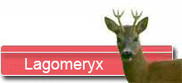
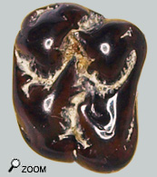
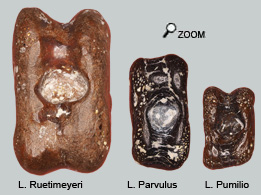
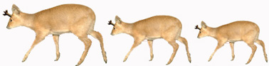

Les 3 petits lagomeryx

  La famille Lagomericidae regroupe des espèces de cervidés à bois, de toutes les tailles (de la taille d’un gros lapin à celle d’un daim). Les petits membres de la famille sont les Lagomeryx.
On connaît 3 espèces de Lagomeryx « vrais » dans les faluns. Lagomeryx Pumilio, Parvulus et Ruetimeyeri (= minimus ?). Du plus petit au plus grand… La différenciation entre des dents de Pumilio et Parvulus est uniquement une question de taille. Les 2 dents présentées correspondent assez bien en taille à L. Parvulus.
Les astragales trappus montrés ci-dessous ont bien un air de famille et permettent de se faire une idée de la différence de taille  qui existait entre les 3 espèces de Lagomeryx. Les Dorcatheriums du miocène moyen montrent également des différences de taille semblables. Il est raisonnable de penser que de telles variations de taille se justifie par une différence d'écologie pour ces animaux.

Le plus petit bois du monde!
Les Lagomeryx montrent des bois sur le principe d’un appendice frontal (mérin ou pivot) surmonté par un mini plateau (l’empaumure) sur lequel s’érigent des andouillers divergents. De vraies petites couronnes. Ces animaux font preuve d’une grande créativité dans la forme des bois...
 Il existe 2 modes de production des pro-andouillers chez les lagomerycidés : un mode par séparation d'une branche, un mode par bourgeonnement spontané. Chez Lagomeryx, ce second type est prédominant c'est pourquoi les pro-andouillers sont de faible importance sont disposés de manière assez anarchique. Il existe 2 modes de production des pro-andouillers chez les lagomerycidés : un mode par séparation d'une branche, un mode par bourgeonnement spontané. Chez Lagomeryx, ce second type est prédominant c'est pourquoi les pro-andouillers sont de faible importance sont disposés de manière assez anarchique.
A priori, cette ramure est permanente chez les Lagomeryx. Ou plutôt, si ces ramures étaient amenées à tomber c'était accidentellement et la zone de rupture n'était pas prédéfinie. Apparemment les bois du vieux parent Ligeromeryx étaient aussi parfois caducs.
Ces bois minuscules n’ont pas vraiment de sens écologique. Peu imposants pour impressionner les femelles, pas très armés pour des combats de mâles. |